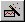
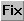
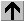
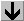
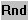
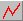
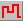
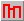
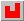
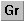

Julian Day Output Viewing Features
- Read X,Y coordinates and the corresponding calendar date from the display above the graph. Coordinates actively update as the pointer moves over the graph.
-  Actively update the graph display for dam, reach, or headwater as the pointer moves over the location on the River Map.
- Ymax: Set the maximum value for the Y-axis by typing a value in the text box.
- Ymin: Set the minimum value for the Y-axis by typing a value in the text box.
-  Fix scale to current settings in order to visually compare graphs.
-  Increase vertical graph scale. Or right-click in the upper-half of graph. This doubles the vertical scale.
-  Decrease vertical graph scale. Or right-click in lower-half of graph. This halves the vertical scale.
-  Round scale up to next significant number.
-  Display graph with continuous line connecting the data points (default view).
-  Display the graph with horizontal lines connecting the data points.
-  Display the graph as hollow bar chart.
-  Display graph as solid bar chart.
-  Group several graphs together to simultaneously change the scale when using Ymax, Ymin, , , , or .